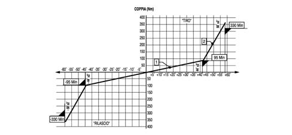
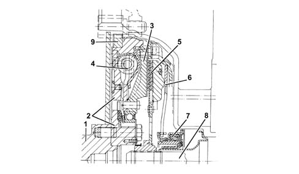

1024B ENGINE FLYWHEEL
- Path
- Descriptions > 10 ENGINE > 1024 CRANKSHAFT AND FLYWHEEL > 1024B ENGINE FLYWHEEL
- Kind
- system description
- Applies to
- engines: 1.9 JTD 8v, 1.9 JTD 16v; all production periods
- Interactive page
- https://sloeber94.github.io/elrnDB-fCrm/en/#/194002372
Subtopics (1)
Applies to: engines: 1.9 JTD 16v; all production periods
CONSTRUCTION SPECIFICATIONS
Twin damper flywheel (DVA) with dual ramp. This flywheel consists of two masses, one forming one piece with the crankshaft and the other with the gearbox main shaft, via the clutch plate. There is a dual ramp, torsional flexible system between these two masses created by two pairs of springs with differentiated operation depending on the torque transmitted.
The clutch engagement mechanism, located between the dual flywheel and gearbox, consists of a rigid plate (unsprung) that improves gear manoeuvrability due to its reduced inertia.

1 - Mass in one piece with the crankshaft
2 - Mass in one piece with the gearbox main shaft
3 - Flexible torsion damping system
4 - Ring gear
Twin ramp torsional flexible system intervention diagram

Applies to: engines: 1.9 JTD 8v; all production periods
CONSTRUCTION SPECIFICATIONS
Dual mass, DVA (dual mass vibration-damping flywheel), one mass integral with the crankshaft and the other on the gearbox mainshaft with an interposed flexible torsional damping system.
The resonance points which, on the conventional system (rigid flywheel and dampened disc) are found at between 800 and 2200 rpm, have been moved to lower rotation speeds, outside of the operation range, thereby allowing improved damping of torsional vibrations and a reduction in noise.
The clutch engagement mechanism, located between the dual flywheel and gearbox, consists of a rigid plate (unsprung) that improves gear manoeuvrability due to its reduced inertia.

1 - Crankshaft
2 - Mass in one piece with the crankshaft
3 - Mass in one piece with the gearbox main shaft
4 - Flexible torsion damping system
5 - Clutch plate
6 - Thrust spring
7 - Thrust bearing
8 - Gearbox main shaft
9 - Ring gear